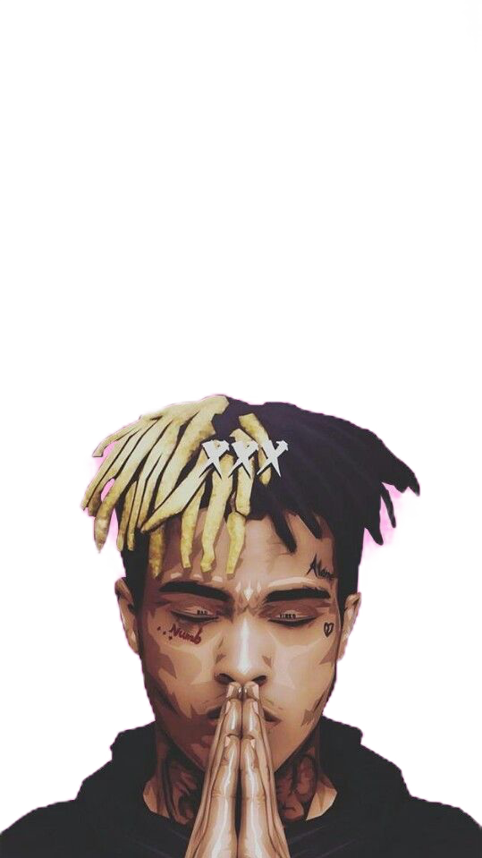
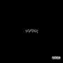

XXXTentacion, born Jahseh Dwayne Ricardo Onfroy, was an American rapper, singer, and songwriter who rose to fame in 2017 with his breakout hit "Look at Me!" Known for his raw and emotionally charged music, XXXTentacion became a polarizing figure in the music industry. His lyrics delved into themes of depression, mental health struggles, and personal demons, resonating with a large and dedicated fan base, particularly among younger listeners. Despite controversy surrounding his personal life, his impact on the music industry was undeniable. He played a significant role in shaping the SoundCloud rap movement and inspired a new wave of artists who embraced introspection and vulnerability in their music. Tragically, XXXTentacion's life was cut short when he was murdered in 2018. However, his legacy continues to live on through his posthumous albums and the unwavering dedication of his fans. His music and willingness to confront difficult subjects have left a lasting impact, sparking conversations about mental health and emotional well-being within the genre. XXXTentacion's legacy serves as a reminder of the power of music to connect, heal, and provoke thought on a profound level.

These are the most listened albums
17
XXXTentacion's debut, "17," offers raw emotion and introspection, delving into personal struggles with a mix of heartfelt vocals and haunting melodies.
Bad Vibes Forever
"Bad Vibes Forever" pays tribute to XXXTentacion's legacy, blending various genres and featuring collaborations with renowned artists, delivering a mix of introspective tracks and catchy hooks.
skins
"Skins" is a concise collection of XXXTentacion's artistic journey, with powerful and thought-provoking tracks that tackle personal struggles and exhibit his unique blend of vulnerability and intensity.
Revenge

"Revenge" showcases XXXTentacion's aggressive and controversial style, with tracks that exude raw energy and unfiltered expressions of pain and societal criticism.
the most popular songs for XXXTENTACION
Sad!
"Sad!" is one of XXXTentacion's most iconic and popular songs. Released in 2018, it showcases his emotional vulnerability and introspection. With melancholic melodies and poignant lyrics, the track delves into themes of depression, heartbreak, and inner turmoil, resonating with listeners who connect with its raw and honest portrayal of pain.
Jocelyn Flores
Inspired by the tragic death of a close friend, "Jocelyn Flores" is a hauntingly beautiful track that captures XXXTentacion's sorrow and grief. The song, named after the late Jocelyn Amparo Flores, reflects on mental health struggles and the impact of suicide. Its introspective lyrics and atmospheric production create an emotionally charged experience.
Moonlight
"Moonlight" is a mesmerizing song known for its dreamy melodies and hypnotic beats. Released in 2018, it showcases a softer side of XXXTentacion, with introspective lyrics exploring themes of love, loneliness, and escapism. The track's catchy hooks and atmospheric soundscapes have made it a favorite among fans and a standout hit in his discography.
Changes
"Changes" is a heartfelt and introspective song that reflects on personal growth, relationships, and the desire for positive transformation. Released in 2018, it showcases XXXTentacion's introspective songwriting and emotional vulnerability. The track's gentle acoustic guitar and poignant lyrics create a sense of introspection and self-reflection.